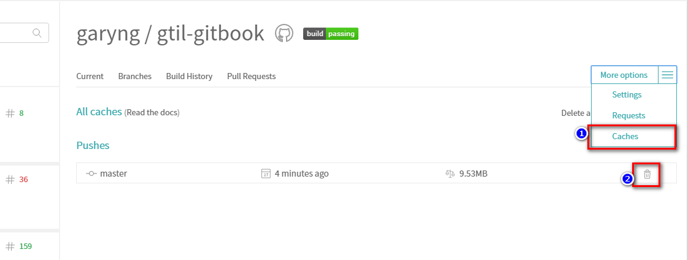

Introduction
Atom
Atom - Auto Complete Path
Terminal in Atom
chrome
Google Chrome - Extensions for Managing Tabs
CSharp
Cake - C# Make
Cake - Remove Solution Folder From .Projects Property
DebuggerDisplayAttribute
DefaultIfEmpty
Squirrel.Windows - Installer and Updater
Git
Generate .gitignore in Command Line
Git and Git Flow
npm
Installing npm pacakge from GitHub
Testing npm package locally
Others
Blog and Travis CI Setup
Laverna - Notes Taking with Markdown
PowerShell
Converting words to Title Case
Renaming files
Travis
Travis CI - Clear Dependencies Cache
VSCode
Visual Studio Code
Published with GitBook
Travis CI - Clear Dependencies Cache
More options > Caches

Useful when Travis uses the wrong npm packages
results matching "
"
No results matching "
"